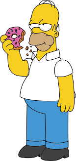

Bienvenido a la página de Los Simpson
Los Simpson es una popular serie de televisión animada que sigue las aventuras de la familia Simpson en la ciudad ficticia de Springfield.
Homer Simpson es el patriarca de la familia y trabaja en la planta nuclear de Springfield.